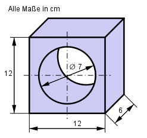
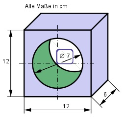

Aufgabe 27 Berechnen Sie das Volumen V des dargestellten Körpers.

V = Quader – Zylinder d = 7 cm --> r = d/2 = 7 cm/2 = 3,5 cm V = a * b * h - π * r2 * h V = 12 cm * 12 cm * 6 cm - π * 3,52 * 6 cm V = 864 cm2 - 230,8 cm3 = 633,2 cm3
O = blaue Quaderoberfläche - 2 * Kreisfläche + + grüne Zylindermantelfläche O = 2 * (12 cm * 12 cm + 12 cm * 6 cm + + 12 cm * 6 cm) - 2 * π * 3,52 cm2 + + 2 * π * 3,5 cm * 6 cm O = 576 cm2 - 76,9 cm2 + 131,9 cm2 = 631 cm2